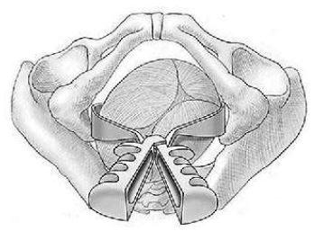
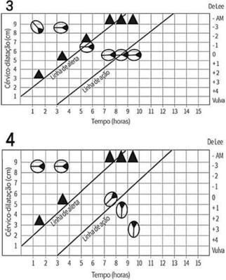
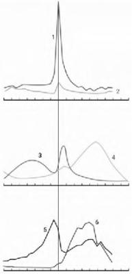

Questão 1 · Toxicologia ocupacional · 4000142195O Caderno de Atenc orientações para a quali cac Atenc compartilhada e sistema
A A caracterização de um evento como acidente de trabalho requer a existência de vínculo empregatı
B Na avaliação médica, a visita/observação in loco no local de trabalho e
C Sı
D Cefaleia intensa, náusea, vômitos, co
E Quanto à duração de afastamento do trabalho, nos casos de incapacidade laborativa parcial, a recomendação do atestado médico emitido na Atenção Básica é de cinco em cinco dias, permitindo reavaliações até que se completem 15 dias. Se houver necessidade de afastamento superior a 15 dias, o (a) trabalhador(a) segurado(a) devera
Questão 2 · Estudos Epidemiológicos · Coef iciente ou Taxa de Mortalidade Inf antil · 4000142194Medidas de Associação e Medidas de Impacto No que concerne à epidemiologia e à mortalidade infantil, assinale a alternativa correta.
A A taxa de mortalidade po
B A taxa de mortalidade neonatal é um indicador bruto, não sensível à integração entre a Atenção Básica e a assistência médico-hospitalar estruturada.
C O desenvolvimento de uma investigação epidemiológica da mortalidade neonatal com delineamento transversal permite estimar o cálculo da taxa de incidência e da razão de chances para o óbito.
D O desenvolvimento de estudo ecológico com dois grupos – expostos e não expostos – constituiu-se como o delineamento epidemiológico mais adequado para a investigação prospectiva dos preditores da mortalidade infantil, com estimação do risco relativo.
E O desenvolvimento de um estudo de casos e controles permite estimar o cálculo da taxa de incidência e do risco relativo para o óbito pós-neonatal, com um intervalo de confiança de 95%.
Questão 3 · Outras Vigilâncias em Saúde · 4000142193Um dos objetivos da farmacovigilância no Brasil é a redução das taxas de morbidade e mortalidade associadas ao uso de medicamentos comercializados no mercado brasileiro, por meio da detecção precoce de problemas de segurança desses produtos para os pacientes e do incentivo à utilização racional de medicamentos. Um dos sistemas utilizados para esse m, desde 2018, é o VigiMed, viabilizado por uma parceria da Agência Nacional de Vigilância Sanitária (Anvisa) com o Uppsala Monitoring Centre (UMC), vinculado à Organização Mundial da Saúde, (OMS), que operacionaliza o Programa de Monitoramento Internacional de Medicamentos. Acerca dessa essa temática, assinale a alternativa correta.
A No Brasil, os medicamentos isentos de prescric
B A principal ferramenta da farmacovigilância é a notificação, por parte dos profissionais de saúde, de toda suspeita de reação adversa causada por medicamento, que passou a ser compulsória em 2018.
C As notificações de eventos adversos decorrentes de medicamentos isentos de prescrição não podem ser cadastradas no VigiMed.
D O notificador, no sistema VigiMed, é somente o profissional de saúde, sendo vetado ao usuário do medicamento fazer qualquer tipo de registro.
E O formulário disponível no VigiMed tem sido utilizado para relatar reações adversas, erros de medicação e inefetividade, entre outros problemas relacionados a medicamentos e vacinas.
Questão 4 · Outros Sistemas de Inf ormação em Saúde e Bases de dados do SUS · 4000142192O Sistema Único de Saúde (SUS) opera e (ou) disponibiliza um conjunto de sistemas de informações estratégicas para que os gestores avaliem e fundamentem o planejamento e a tomada de decisões na saúde. Com relação aos Sistemas de Informação em Saúde, é correto afirmar que o Sistema de Informação
A de Agravos de Notificação possibilita o acompanhamento da cobertura vacinal de todos os agravos de notificação compulsória imunopreveníveis, por unidades da federação.
B da Agência Nacional de Saúde Suplementar não permite consulta do quantitativo de atendimentos de beneficiários de planos de saúde no SUS.
C da Agência Nacional de Saúde Suplementar apresenta as operadoras de planos privados de saúde com registro ativo e razão social, porém não disponibiliza receitas e despesas das operadoras.
D do Programa Nacional de Imunizações possibilita o controle do estoque de imunobiológicos, necessário aos administradores que têm a incumbência de programar a aquisição e a distribuição dos referidos imunobiológicos.
E de Nascidos Vivos permite consulta de internações hospitalares por tipos de parto, vaginal e cesáreo, e as respectivas informações a respeito de média de permanência e média de custos dessas internações.
Questão 5 · Políticas de Saúde do Sistema Único de Saúde · 4000142191A respeito das políticas e dos programas de saúde vigentes no Brasil e das respectivas recomendações, assinale a alternativa correta.
A No Brasil, o tratamento supervisionado para tuberculose é realizado somente nos centros de especialidades.
B O Programa Saúde na Hora busca ampliar o acesso aos serviços de atenção primária à saúde por meio do funcionamento das unidades básicas de saúde (UBS) ou das unidades de Saúde da Família (USF) em horário estendido.
C O Programa Saúde na Hora determina a obrigatoriedade de oferta de testes rápidos para diagnóstico do HIV e da sífilis na hora, sem a necessidade de agendamento prévio nas unidades de saúde, visando ampliar a oferta de testagem.
D A profilaxia pré-exposição (PrEP) ao HIV é um novo método de prevenção à infecção pelo HIV, que deve ser dispensado para todos os usuários com tuberculose que sejam bacilíferos, tendo em vista os elevados índices de coinfecção TB/HIV.
E A profilaxia pós-exposição (PEP) ao HIV constitui uma urgência médica, que deve ser iniciada preferencialmente nas primeiras duas horas após a exposição e, no máximo, em até 24 horas, com duração de 30 dias.
Questão 6 · Imunização passiva · Prof ilaxia da hepatite B · 4000142190Considerando as orientações a respeito da prevenção e da pro laxia da hepatite B, publicadas pelo Departamento de Doenças de Condições Crônicas e Infecções Sexualmente Transmissíveis do Ministério da Saúde, assinale a alternativa correta.
A Em crianças, a vacina contra a hepatite B (HBV) deve ser aplicada em duas doses, sendo a primeira ao nascer e a segunda aos 6 meses de idade.
B Para a imunização de adultos que não se vacinaram contra a hepatite B na infância, são necessárias duas doses em um intervalo de seis meses.
C Para a imunização contra a hepatite B, pessoas que tenham algum tipo de imunodepressão precisam de um esquema especial, com o dobro da dose, administrado nos Centros de Referência para Imunobiológicos Especiais.
D Na prevenção da hepatite B, a imunoglobulina (IGHAHB) é indicada para indivíduos suscetíveis, entre os quais estão os pacientes com tuberculose bacilífera.
E A oferta de autotestes para hepatite B tem sido regulada pelas unidades básicas de saúde.
Questão 7 · Epidemiologia · Tratamento · 4000142189As hepatites virais são um grave problema de saúde pública no Brasil e no mundo. A Organização Mundial da Saúde (OMS) estima que 71 milhões de pessoas estejam infectadas pelo vírus da hepatite C (HCV) em todo o mundo e que ocorram 1,34 milhões de óbitos anuais associados às hepatites virais, sendo 96% dos casos relacionados às hepatites virais B ou C. A proposta da OMS é reduzir as novas infecções pelos vírus hepatotrópicos e a mortalidade associada a elas em 90% e 65%, respectivamente, até 2030. O Brasil iniciou uma linha de ação especí ca, com um Plano Nacional para Eliminação da Hepatite C e a atualização do Protocolo Clínico e Diretrizes Terapêuticas para Hepatite C e Coinfecções. Considerando que as informações contidas nesses documentos são fundamentais para a organização da Rede de Atenção à Saúde, no que tange ao enfrentamento da hepatite C, assinale a alternativa correta.
A No Brasil, um dos maiores desafios em termos de vigilância em saúde era a não obrigatoriedade da notificação compulsória nos exames de pesquisa de anticorpos em teste laboratorial ou teste rápido, obrigatoriedade que passou a vigorar em 2018.
B O Plano Nacional para Eliminação da Hepatite C estabelece a frequência de teste rápido anti-HCV a cada três meses para o grupo prioritário 1, em que estão as pessoas comunicantes de indivíduos com HCV.
C Os medicamentos utilizados para o tratamento da hepatite C aguda e crônica não são teratogênicos e, portanto, o tratamento não deve ser interrompido na ocorrência de gravidez.
D A atual política brasileira para o enfrentamento de hepatite C no País assegura o tratamento para todos os pacientes, exceto para aqueles com hepatite C crônica.
E A atual estratégia brasileira para o diagnóstico de hepatite C contempla duas etapas investigativas: um teste inicial, realizado por pesquisa de anticorpos em teste laboratorial ou teste rápido; e, se reagente, o teste é confirmado por detecção direta do vírus por biologia molecular.
Revisar: possível letra faltando em enunciado
Questão 8 · Vigilância Epidemiológica · Vigilância em Saúde · 4000142188A situação atual das doenças transmissíveis causa um grande impacto nos dados de morbidade do Brasil, com destaque para aquelas que têm associações com as condições sanitárias, econo de saúde brasileiro, referente à ocorrência de dengue, chikungunya e zika nos períodos de janeiro a julho de 2018 e de 2019, assinale a alternativa correta.
A O sorotipo do vı
B O número de casos de dengue aumentou em mais de 500% no País.
C O número de casos prováveis de chikungunya teve um incremento de 25,8%, com aumento do número de casos prováveis em todas as regiões, exceto na região Sudeste.
D A taxa de letalidade geral por chikungunya foi de 10% no País, sendo o grupo com maior letalidade o das gestantes.
E O nu
Questão 9 · Lei n 80801990 · 4000142187Tendo em vista que as comissões intergestores, o Conselho Nacional de Secretários de Saúde (Conass) e o Conselho Nacional de Secretarias Municipais de Saúde (Conasems) fazem parte da gestão compartilhada do Sistema Único de Saúde (SUS), assinale a alternativa correta.
A As Comissões Intergestores Bipartite e Tripartite são espaços intergovernamentais dos quais um dos objetivos é o de fixar diretrizes acerca das regiões de saúde.
B O Conass é uma entidade de direito público, sem fins lucrativos.
C O Conass possui duas câmaras técnicas que visam atender às necessidades das Secretarias Estaduais de Saúde, que são a câmara de atenção primária à saúde e a câmara de atenção especializada em saúde.
D O Conasems é composto por cinco representantes, sendo um de cada região de saúde do País.
E Ao Conass e ao Conasems é proibido o repasse de recursos do orçamento geral da União, por meio do Fundo Nacional de Saúde, para auxílio no custeio de despesas institucionais.
Questão 10 · Regionalização do SUS · 4000142186Considerando a organização do Sistema Único de Saúde (SUS), no que tange ao planejamento da saúde, à assistência à saúde e à articulação interfederativa, conforme disposto no Decreto no 7.508/2011, assinale a alternativa correta.
A O Contrato Organizativo da Ação Pública da Saúde visa à fixação de médicos para atuação na atenção primária, em municípios com elevado índice de vulnerabilidade social.
B O Contrato Organizativo da Ação Pública da Saúde regulamenta a contratação de médicos em caráter emergencial.
C Para ser instituída, uma região de saúde requer, no mínimo, a comprovação da ausência de cobertura de serviços de atenção primária superior a 50% da população.
D Para ser instituída, uma região de saúde requer, no mínimo, ações e serviços de atenção primária; urgência e emergência; atenção psicossocial; atenção ambulatorial especializada e hospitalar; e vigilância em saúde.
E Os serviços de atenção psicossocial não são considerados Serviços Portas de Entrada nas Redes de Atenção à Saúde.
Questão 11 · Parto vaginal operatório · Fórcipe · Obstetrícia · 4000142185HOFFMAN, Barbara L. Ginecologia de Williams. 2. ed. Porto Alegre: AMGH Editora Ltda, 2014, com adaptações. A respeito da técnica de aplicação do forcéps, é correto afirmar que essa imagem representa a aplicação

A correta das pás do fórceps de Kielland, em variedade de posição occipitoesquerda transversa, já iniciada rotação para occipitopúbica.
B errada das pás do fórceps de Simpson, em variedade de posição occipitodireita posterior.
C equivocada das pás do fórceps de Piper, em variedade de posição occipitodireita posterior, já que deve ser utilizado em apresentações pélvicas.
D correta das pás do fórceps de Kielland, em variedade de posição occipitodireita transversa, já iniciada rotação para occipitossacra.
E errada das pás do fórceps de Simpson, em variedade de posição occipitoesquerda anterior.
Questão 12 · Parto · Seguimento prénatal · Obstetrícia · 4000142184Acerca da assistência pré-natal em gestantes portadoras de HIV, assinale a alternativa correta.
A No Brasil, durante o trabalho de parto, o AZT profilático é dispensável nas gestantes que apresentem carga viral indetectável após 34 semanas de gestação.
B A vacina pneumocócica 13, apesar de conter vírus vivo, está recomendada para gestantes portadoras de HIV.
C Indica-se profilaxia primária contra infecções oportunistas com sulfametoxazol-trimetropima 480 mg/dia, quando a contagem de linfócitos CD4 for menor que 250.
D Gestantes portadoras de HIV devem realizar a prova tuberculínica (PPD) na primeira consulta de pré-natal, se sintomáticas.
E Em mulheres com carga viral desconhecida ou maior que 1.000 cópias/mL após a 34a semana de gestação, deve-se agendar cesárea eletiva a partir da 39a semana de gestação.
Questão 13 · Suporte Avançado de Vida · RCP na gestação · Cardiologia · 4000142183Uma gestante G3C2, com idade gestacional de 35 semanas e portadora de miocardiopatia hipertró ca, procura a emergência obstétrica referindo dor torácica retroesternal, que começou há cerca de 30 minutos, associada a dispneia e diaforese importantes. A paciente é encaminhada para a maca e iniciam-se monitorizações fetal e materna. Logo depois, a paciente torna-se irresponsiva, com pulso carotídeo não palpável e monitor cardíaco mostrando traçado de brilação ventricular. A equipe de plantão é chamada para auxílio e dá início a protocolo de reanimação cardiopulmonar (RCP). Nesse caso clínico, após serem adotadas todas as medidas – massagem e ventilação, drogas antiarrítmicas e des brilação, sem sucesso – o próximo passo é
A manter a RCP, manter aparelhos de monitorização fetal e comunicar a equipe pediátrica de plantão quanto à cesárea
B manter a RCP e realizar assepsia para cesárea
C interromper a RCP e preparar bandeja cirúrgica com material para cesárea
D manter RCP e, após quatro minutos sem resposta às medidas de reanimação, realizar cesárea perimortem apenas com bisturi.
E interromper a RCP, deslocar o útero para a esquerda para melhorar o retorno venoso e iniciar cesárea perimortem
Revisar: possível letra faltando em enunciado
Questão 14 · Intercorrências obstétricas obstetrícia patológica · Doença trof oblástica gestacional · Obstetrícia · 4000142182Com relação à doença trofoblástica gestacional, assinale a alternativa correta.
A A presença de cistos tecaluteínicos, na ultrassonografia, está mais comumente associada à mola hidatiforme incompleta.
B Deve-se avaliar a função tireoidiana, pois o hCG pode ligar-se a receptores de TSH localizados na tireoide, provocando hipotireoidismo.
C As pacientes que tiveram gestação molar no passado e engravidaram novamente deverão realizar o exame do hCG quantitativo quatro semanas depois do término da gravidez atual, para identificar a ocorrência de neoplasia trofoblástica gestacional.
D Pacientes com Rh negativo deverão realizar imunoglobulina anti-Rh após a aspiração intrauterina, mesmo quando a suspeita é de mola hidatiforme completa.
E A presença do marcador p57 sugere a ocorrência de mola hidatiforme completa.
Questão 15 · Propedêutica do casal inf értil · 4000142181Um casal que tenta engravidar há dois anos comparece ao consultório de um especialista para investigar infertilidade. O homem tem 37 anos de idade, é obeso e tabagista, possui dois lhos com suas ex-esposas e nega trauma testicular ou varicocele. A mulher tem 36 anos de idade, nunca gestou, a rma ser triatleta e ingere bastante café para tolerar a rotina agitada. Nega doenças atuais, referindo somente passado de tratamento radioterápico em razão de neoplasia óssea no quadril. Relata também ciclos menstruais regulares desde a menarca, com duração de cinco dias, uxo leve-moderado e associado a dismenorreia leve. Nega acne ou hirsutismo. Com base nesse caso clínico e nos conhecimentos médicos correlatos, assinale a alternativa correta.
A São identificados somente quatro fatores de risco para infertilidade.
B A avaliação da reserva ovariana dessa paciente pode ser realizada pela dosagem do hormônio antimulleriano e pela contagem de folículos antrais.
C A redução no número (oligo ou azoospermia), na motilidade (teratospermia) ou no número de formas normais (astenospermia) dos espermatozoides consiste em fator que pode comprometer a qualidade seminal.
D A avaliação da ovulação é indispensável e pode ser realizada pela dosagem de progesterona no terceiro dia do ciclo e por ecografia para controle da ovulação.
E A realização de uma laparoscopia com cromotubagem negativa indica perviedade das tubas uterinas.
Questão 16 · Endometriose · 4000142180Durante consulta com a ginecologista, uma paciente de 27 anos de idade queixa-se de dismenorreia importante, desde a menarca, e de dispareunia eventual. Informa que tenta engravidar há dois anos, sem sucesso. Ao exame físico, a médica percebe útero pouco móvel e palpa massa em anexo direito. Acerca desse caso clínico e com base nos conhecimentos médicos correlatos, assinale a alternativa correta.
A A endometriose é a principal hipótese diagnóstica. Suspeita-se de endometrioma no ovário direito e, por isso, a dosagem do antígeno tumoral 125 é usada para o acompanhamento.
B Uma opção para tratar a infertilidade associada à endometriose é utilizar análogos do GnRH para reduzir a dependência estrogênica característica da doença.
C O acetato de medroxiprogesterona de depósito pode ser usado no tratamento da endometriose, mesmo que esteja associado à perda de massa óssea com o uso em longo prazo.
D Um dos mecanismos de ação dos anti-inflamatórios empregados no tratamento da dor causada pela endometriose é a decidualização dos implantes.
E A laparoscopia pode ser diagnóstica e terapêutica. No caso de endometrioma, a melhor abordagem é a drenagem da lesão.
Questão 17 · Obstetrícia · Partograma · 4000142179FERNANDES, Cesar Eduardo; SILVA DE SÁ, Marcos Felipe. Tratado de Obstetrícia Febrasgo. 1. ed. Rio de Janeiro: ELSEVIER, 2019. No que se refere aos partogramas apresentados, é correto afirmar que o partograma de número


A 1 representa uma distocia de descida chamada fase ativa prolongada. A causa dessa distocia é a desproporção cefalopélvica que, na maioria dos casos, é secundária a apresentações fetais defletidas ou em variedades de posição transversas ou posteriores.
B 2 representa uma distocia de dilatação chamada parada secundária da dilatação. A principal causa dessa anormalidade é a presença de contrações em número ou qualidade insuficiente para promover a dilatação do colo uterino.
C 3 representa uma distocia de descida chamada parada secundária da descida. A verticalização da parturiente, a rotura de bolsa amniótica e a rotação manual do polo cefálico podem auxiliar em sua correção.
D 4 representa uma distocia de descida chamada período expulsivo prolongado. A principal causa dessa anormalidade é a desproporção cefalopélvica.
E 4 representa uma distocia de dilatação chamada parto taquitócico. Essa distocia está associada a maiores riscos de hemorragia puerperal, tanto por atonia uterina quanto por lacerações de trajeto.
Questão 18 · Lesão intraepitelial escamosa de baixo grau · 4000142178Uma paciente de 19 anos de idade procura um ginecologista, para consulta de rotina, e informa que gostaria de realizar a coleta de exame citopatológico do colo do útero, pois já iniciou a vida sexual. Ao exame físico, o médico identi ca paredes vaginais e colo do útero sem lesões visíveis a olho nu, e realiza coleta de material, conforme a técnica padrão. Após 15 dias, recebe o resultado do exame com diagnóstico de lesão intraepitelial escamosa de baixo grau (LSIL). A respeito desse caso clínico e considerando as Diretrizes Brasileiras para o Rastreamento de Câncer de Colo do Útero, assinale a alternativa correta.
A A coleta do exame citopatológico foi indicada corretamente, pois a paciente já teve relações sexuais, estando exposta ao vírus do HPV e, portanto, com chances de desenvolver lesões cervicais precursoras do câncer de colo do útero.
B A paciente deverá ser encaminhada para a colposcopia.
C A paciente deverá repetir o exame em seis meses.
D A paciente deverá repetir o exame em um ano e, caso o resultado seja normal, deve realizar nova coleta somente aos 25 anos de idade.
E A paciente deverá repetir o exame em três anos e, caso se mantenha com lesão intraepitelial escamosa de baixo grau (LSIL), deverá repetí-lo novamente em três anos.
Revisar: possível letra faltando em enunciado
Questão 19 · Ciclo menstrual · 4000142177HOFFMAN, Barbara L. Ginecologia de Williams. 2. ed. Porto Alegre: AMGH Editora Ltda, 2014, com adaptações. Considerando a fisiologia do ciclo menstrual e de acordo com a imagem apresentada, assinale a alternativa correta.

A O número 4 corresponde à progesterona. A progesterona encontra-se em concentrações elevadas durante a fase secretória do endométrio.
B O número 2 equivale ao FSH. Em resposta à estimulação do FSH, as células da granulosa sintetizam progesterona.
C O número 1 corresponde ao LH. Em resposta à estimulação do LH, as células da teca sintetizam androgênios.
D O número 5 equivale à inibina B. Durante o início da fase folicular, o FSH estimula a secreção de inibina B.
E O número 6 corresponde à inibina A. Durante a fase lútea, o LH estimula a secreção de inibina A.
Questão 20 · Roteiro diagnóstico · 4000142176Uma paciente de 16 anos de idade procura uma ginecologista, acompanhada pela mãe, referindo menarca ausente até o momento. Nega sexarca, doenças crônicas ou uso contínuo de medicações, distúrbios alimentares, atividade física excessiva ou estresse. Os achados do exame físico são peso = 50 kg, altura = 1,58 m, mamas com crescimento e projeção da aréola, formando elevação acima do corpo da mama, hímen pérveo, porém íntegro, fenótipo feminino. A investigação dessa paciente incluiu dosagem de hormônio folículo-estimulante (FSH), ultrassonografia pélvica e cariótipo. No que se refere a esse caso clínico e com base nos conhecimentos médicos correlatos, é correto a rmar que, diante de um FSH com valor
A entre 5 mUI/mL e 20 mUI/mL, útero ausente e cariótipo 46 XY, deve-se pensar em síndrome dos testículos feminilizantes.
B entre 5 mUI/mL e 20 mUI/mL, útero ausente e cariótipo 46 XX, deve-se pensar em síndrome de Morris.
C > 20 mUI/mL, útero presente e cariótipo 46 XY, deve-se pensar em síndrome de Kallmann.
D > 20 mUI/mL, útero presente e cariótipo 46 XX, deve-se pensar em síndrome de Swyer.
E < 5 mUI/mL, útero ausente e cariótipo 45 X, deve-se pensar em síndrome de Turner.
Questão 21 · Síndrome nef rótica · Pediatria · Nef rologia Pediátrica · 4000142175Um paciente de 4 anos de idade, apresenta queixa de edema em membros inferiores e urina espumosa. Ao exame físico, mostra-se em BEG, corado, hidratado; cardio: bulhas rítmicas normofonéticas sem sopros audíveis; pulmonar: murmúrio ventricular presente, simétrico, sem ruídos adventícios, sem sinais de desconforto. Constatam-se abdome plano, ruídos hidroaéreos presentes, ácido, sem visceromegalias, indolor; otoscopia: membrana timpânica hialina, sem abaulamento, sem hiperemia de conduto, sem outras alterações – bilateralmente; oroscopia: sem placas, sem hiperemia, sem lesões ou outras alterações; e pulsos cheios, tec < 3 seg. Ao exame neurológico, observam-se Glasgow 15, paciente ativo, reativo ao exame, com pupilas isocóricas e fotorreagentes, sem sinais focais, sem sinais meníngeos, pele íntegra, anictérico, e membros inferiores com edema 2+/4+, mole, frio e depressível. Veri cam-se também FC = 106 bpm, FR = 26 irpm, PA no percentil 50, T = 36,5 ºC e SatO2 = 100% em AA. Com base nesse caso clínico, quanto à síndrome nefrótica na faixa etária pediátrica, assinale a alternativa correta.
A A lesão histológica mínima é a causa primária mais comum de síndrome nefrótica na pediatria.
B A tríade edema, hipertensão arterial e hematúria macroscópica definem o diagnóstico.
C Independentemente do quadro clínico e de sua evolução, a biópsia renal sempre é indicada.
D Medidas não farmacológicas, como dieta hipossódica e repouso, são irrelevantes em qualquer fase do tratamento da síndrome nefrótica.
E O uso de imunossupressor, como ciclofosfamida e ciclosporina, é o tratamento de escolha na síndrome nefrótica por lesão histológica mínima. Os corticoides ficam reservados aos casos de resistência ao tratamento inicial.
Questão 22 · Taquicardia Supraventricular TSV · 4000142174Uma paciente de 11 anos de idade deu entrada na unidade de pronto atendimento com queixa de mal-estar. Na triagem, apresenta FC = 230 bpm, FR = 28 irpm, SatO2 = 97% em AA, T = 37,2 ºC e pressão arterial no P50. A enfermeira rapidamente transferiu a paciente para a sala de emergência e solicitou avaliação médica. Ao exame físico, ela mostra-se em BEG, corada, hidratada; cardio: búlhas rítmicas normofonéticas tipo 2 sem sopros audíveis, taquicárdica; pulmonar: murmúrio ventricular presente, simétrico, sem ruídos adventícios e sem sinais de desconforto. Veri cam-se abdome plano, ruídos hidroaéreos presentes, ácido, sem visceromegalias, indolor; e também pulsos cheios, tempo de enchimento capilar < 3 seg. Ao exame neurológico, encontra-se em Glasgow 15, ativa, reativa ao exame, com pupilas isocóricas e fotorreagentes, sem sinais focais, sem sinais meníngeos e com pele íntegra. Realizou-se eletrocardiograma no qual se encontra ausência de onda P, QRS estreito e regular, e frequência cardíaca não variável = 230 bpm. Nesse caso clínico, o diagnóstico e a medicação indicada são.
A bradicardia sinusal e epinefrina.
B taquicardia ventricular e amiodarona.
C taquicardia sinusal; contudo, sem medicação específica, deve-se pesquisar e tratar a causa.
D fibrilação atrial e milrinona.
E taquicardia supraventricular e adenosina.
Questão 23 · DNPM Desenvolvimento NeuroPsicoMotor · Pediatria · Avaliando o desenvolvimento · 4000142173Um bebê que tenta alcançar um brinquedo, volta-se para o som, rola no leito, tenta chamar a atenção da mãe por meio de sorriso, vocalização, gestos, pedido de colo. Considera-se desenvolvimento neuropsicomotor adequado se esse bebe tiver
A 2 meses de vida.
B 4 meses de vida.
C 6 meses de vida.
D 9 meses de vida.
E 12 meses de vida.
Questão 24 · Bronquiolite · Aspectos Clínicos Quadro clínico · Pediatria · 4000142172Uma criança de 6 meses de vida foi encaminhada à unidade de pronto atendimento porque iniciou quadro de tosse, coriza e febre há quatro dias e, há um dia, evoluiu com sibilos respiratórios difusos, dispneia e desconforto respiratório. Ao exame físico, encontra-se em BEG, corada, hidratada; cardio: bulhas rítmicas normofonéticas sem sopros audíveis; pulmonar: murmúrio ventricular presente, simétrico, com sibilos difusos e retração subcostal. Demonstra abdome plano, RHA+, flácido, sem visceromegalias, indolor. Constatam-se otoscopia: membrana timpânica hialina, sem abaulamento, sem hiperemia de conduto, sem outras alterações bilateralmente; oroscopia: sem placas, discreta hiperemia, sem lesões ou outras alterações; pulsos cheios, tempo de enchimento capilar < 3 seg. Ao exame neurológico, apresenta-se em Glasgow 15, ativo, reativo ao exame, com pupilas isocóricas e fotorreagentes, sem sinais focais, sem sinais meníngeos, com fontanela anterior normotensa, pele íntegra e anictérico. Observam-se FC = 140 bpm; FR = 55 irpm; SatO2 = 90% em AA; T = 37,5 ºC. Raios X de tórax indicaram hipertransparência, retificação do diafragma, aumento do diâmetro anterossuperior do tórax. Nesse caso clínico, o quadro sugere
A pneumonia bacteriana comunitária.
B pneumonia afebril do lactente.
C pneumonia atípica.
D bronquiolite viral aguda.
E coqueluche.
Questão 25 · Gastrologia Pediátrica · Diagnósticos dif erenciais · Pediatria · 4000142171A dor abdominal crônica é queixa frequente na faixa etária pediátrica. Acerca desse tema, assinale a alternativa correta.
A O paciente com síndrome do intestino irritável pode ter, além da dor, alteração do hábito intestinal relacionada à consistência das fezes e à frequência, ao esforço ou à urgência para defecar, tenesmo, passagem de muco e distensão abdominal.
B As causas orgânicas são mais comuns que as causas funcionais.
C A enxaqueca abdominal caracteriza-se por dor abdominal de leve intensidade, acompanhada de distensão abdominal e melhora após evacuação.
D O diagnóstico de dor abdominal funcional deve ser sempre embasado em exames laboratoriais e de imagem.
E Considera-se dispepsia funcional quando o paciente apresentar eventuais episódios de dor ou desconforto localizado no abdome inferior, abaixo da cicatriz umbilical, e houver alívio da dor após evacuar.
Questão 26 · Af ecções Testiculares Benignas · Escroto Agudo · Cirurgia · 4000142170A patologia com indicação para cirurgia de emergência é a (o)
A hidrocele.
B torção testicular.
C balanopostite.
D fimose.
E testículo retrátil.
Questão 27 · Pediatria · Puericultura Geral · 4000142169A respeito das dermatoses na infância e sua apresentação clínica, assinale a alternativa correta.
A Pediculose: no couro cabeludo, forma alopécia localizada, com cabelos tonsurados (cortados próximos à raiz), descamação e eritema.
B Tungiase: pápulas, arredondadas, firmes de 2 mm a 5 mm, em forma de cúpula, cor de pele ou rosadas, com superfície brilhante e, algumas vezes, centro umbilicado.
C Larva migrans: pápulas, nódulos, túneis, pústulas e vesículas; nos adolescentes, localizam-se mais frequentemente nos espaços interdigitais, em punhos, tornozelos, axilas, virilhas, palmas e plantas.
D Candidíase: área eritematosa, bem demarcada, úmida, com erosão superficial e pápulas ou pápulo-pústulas satélites.
E Molusco contagioso: pápulas esféricas branco amareladas com ponto negro central.
Questão 28 · Diarreia Aguda · Soro de reidratação oral · Pediatria · 4000142168Uma criança de 3 anos de idade foi levada ao atendimento por quadro de diarreia aquosa há três dias. A mãe nega febre e presença de sangue e muco nas fezes. Relata náuseas, vômitos e redução do apetite, sem outras queixas. Ao exame físico, a criança apresenta-se irritada, com olhos fundos, boca e língua secas, sedenta, com lágrimas ausentes, pulso rápido e sinal da prega desaparecendo lentamente, em menos de dois segundos. Veri cam-se FC = 130 bpm, FR = 30 irpm, SatO2 = 99% em AA e T = 37,4 ºC. Considerando esse caso clínico, no que se refere à diarreia aguda na infância, assinale a alternativa correta.
A O rotavírus é um importante agente etiológico da diarreia aguda em crianças. O Ministério da Saúde incluiu, no Programa Nacional de Imunizações (PNI), a vacina contra o rotavírus, uma medida que ajudou na redução do número de casos de diarreia na infância; ela é aplicada, segundo o PNI, no 2o, 4o e 6o meses de vida.
B Esse paciente é classificado como portador de desidratação e deve receber hidratação endovenosa na dose 20 mL/kg de peso.
C A ceftriaxona é o antibiótico de escolha nos casos de disenteria na criança. A dose recomendada é de 50 mg/kg – 100 mg/kg, de três dias a cinco dias.
D A giardíase é causada por um protozoário que infecta na sua forma trofozoíta. Medidas como higiene das mãos e dos alimentos podem favorecer a redução da infecção, mas a implementação de redes de água e esgoto, nesse caso são irrelevantes no processo de controle da infecção e na disseminação da doença.
E A partir de 2002, a Organização Mundial da Saúde estabeleceu a solução de reidratação oral (SRO) com osmolaridade reduzida, como a solução de escolha para a terapia de reidratação oral na diarreia.
Questão 29 · Massagem cardíaca · Reanimação neonatal · Pediatria · 4000142167Acerca da reanimação neonatal no recém-nascido (RN) com idade gestacional maior ou igual a 34 semanas, assinale a alternativa correta.
A Aplicar o boletim de Apgar é importante, pois define a necessidade de reanimação neonatal. Nele são avaliados cor da pele, tônus muscular, padrão respiratório, frequência cardíaca e irritabilidade reflexa.
B Naquele que necessita de reanimação neonatal, a ventilação por pressão positiva (VPP) deve ser iniciada com ar ambiente.
C No RN que necessita de massagem cardíaca, são realizadas 15 compressões para cada duas ventilações.
D A oximetria de pulso deve ter seu sensor aplicado no membro superior esquerdo.
E Considera-se RN a termo aquele entre 36 semanas e 41 semanas de idade gestacional.
Questão 30 · Pediatria · Alimentação Inf antil · 4000142166Com relação à alimentação infantil, assinale a alternativa correta.
A Aos 6 meses de vida, o aleitamento materno é substituído pela alimentação complementar.
B A cárie precoce da infância (CPI) tem etiologia exclusivamente alimentar. Os dentes incisivos superiores são os mais acometidos, enquanto os incisivos inferiores estão protegidos pela saliva e a língua.
C A partir de 1 ano de idade, é comum a criança reduzir a quantidade de alimento consumido e recusar alguns alimentos que, até então, eram bem aceitos. Isso pode estar relacionado à menor velocidade de crescimento e também ao fato de que a criança presta mais atenção ao alimento e em seus detalhes.
D Entre crianças de 7 anos a 10 anos de idade, os hábitos alimentares deixam de ser influenciados pela família, e a escola assume esse papel de maneira exclusiva. Nessa faixa etária, verifica-se o aumento do consumo de embutidos, bolachas, biscoitos e a redução do consumo de arroz, feijão, ovos e peixes.
E A deficiência de ferro pode estar relacionada à alimentação, sobretudo na criança entre 6 meses e 18 meses de vida. No diagnóstico, por meio de exame laboratorial, encontram-se: hemograma com HCM aumentado, volume corpuscular médio aumentado e RDW aumentado, e dosagem de ferritina diminuída.
Questão 31 · Etiopatogênese · Pediatria · Enterocolite Necrosante · 4000142165Quanto à enterocolite necrosante na cirurgia pediátrica, assinale a alternativa correta.
A É a emergência cirúrgica do trato gastrointestinal mais comum no período neonatal.
B O tratamento é sempre cirúrgico.
C O principal fator de risco é a infeção no trato gastrointestinal.
D Somente 20% dos casos se manifestam no primeiro mês de vida.
E A enterocolite necrosante neonatal é a segunda causa mais comum de síndrome do intestino curto.
Questão 32 · Tratamento · Cirurgia · 4000142164Acerca de fissuras anais, assinale a alternativa correta.
A A maioria das fissuras encontram-se na margem lateral no ânus.
B A injeção de toxina botulínica pode ser um tratamento alternativo nos pacientes não responsivos ao tratamento clínico e que querem evitar procedimentos cirúrgicos.
C As fissuras da linha média devem ser relacionadas com tuberculose, HIV, HPV ou carcinoma.
D O aumento do fluxo sanguíneo na linha média posterior do ânus é uma das causas de fissuras.
E A fissura anal geralmente causa pouca dor em razão de sua localização até a anoderme.
Questão 33 · Úlcera péptica Perf urada · Cirurgia · 4000142163Uma paciente de 76 anos de idade compareceu ao atendimento médico queixando-se de dor de forte intensidade no abdome, com início há cerca de duas horas. Relata ser tabagista, hipertensa e utilizar remédios para dores nas costas de forma contínua. Ao exame físico, apresentou abdome em tábua à palpação. Quanto aos sinais vitais, observam-se PA = 90 mmHg x 40 mmHg, FC = 120 bpm, FR = 20 irpm e SatO2 = 96%. A respeito desse caso clínico, assinale a alternativa correta.
A É imprescindível a realização de uma tomografia com contraste para definição de conduta e diagnóstico.
B O tratamento é com antibioticoterapia e monitorização da paciente.
C Deve-se orientá-la quanto à necessidade de interromper o tabagismo, manter a doença hipertensiva controlada e investigar o motivo da dor nas costas, sem nenhum tratamento adicional.
D A dor relatada pela paciente é compatível com o exame físico, tratando-se de um abdome agudo vascular.
E O provável diagnóstico é de úlcera péptica perfurada, e o tratamento é cirúrgico.
Questão 34 · Inf ecção de Ferida Operatória Inf ecção de Sítio Cirúrgico ISC · Cirurgia · 4000142162Um paciente de 65 anos de idade, diabético, realizou um procedimento cirúrgico de emergência (hérnia inguinal estrangulada), e, no quinto dia do pós-operatório, constataram-se sinais de infecção do sítio cirúrgico. Com relação ao perfil do paciente e às infecções do sítio cirúrgico, é correto afirmar que
A hipotermia e tempo operatório prolongado são fatores de risco para o desenvolvimento de infecções do sítio cirúrgico.
B a idade e as comorbidades do paciente não interferem na probabilidade de infecção do sítio cirúrgico.
C procedimentos eletivos e de emergência têm a mesma taxa de infecção do sítio cirúrgico.
D a cirurgia laparoscópica apresenta o mesmo índice de infecção do sítio cirúrgico que as de técnica convencional.
E a hiperglicemia não aumenta o risco de infecção do sítio cirúrgico.
Questão 35 · Queloide · 4000142161No que se refere às cicatrizes hipertróficas e a queloides, assinale a alternativa correta.
A As feridas paralelas às linhas de Langer têm maior propensão a fazer cicatriz hipertrófica ou queloide.
B Os queloides são mais comuns em indivíduos de pele clara.
C As cicatrizes hipertróficas e os queloides são cicatrizes proliferativas caracterizadas por depósito excessivo de colágeno.
D As cicatrizes hipertróficas contêm principalmente colágeno tipo I.
E Os queloides podem ser prevenidos e não são refratários à intervenção cirúrgica.
Questão 36 · Hemotórax · Cirurgia · 4000142160Um paciente foi conduzido à emergência do pronto-socorro de sua cidade, vítima de trauma penetrante por arma de fogo em hemitórax esquerdo, com orifício de entrada em segundo espaço intercostal de hemitórax esquerdo anterior e sem orifício de saída. À chegada, o paciente foi intubado e seus sinais vitais eram PA = 60 mmHg x 40 mmHg, FC = 140 bpm, FR = 24 irpm e SatO2 = 76%. Não havia murmúrio vesicular à esquerda, tendo sido inserido dreno com débito de 2.000 mL de sangue. Quanto a esse caso clínico, assinale a alternativa correta.
A Antes da drenagem torácica, era necessário realização de raios X de tórax.
B Esse paciente tem indicação de toracotomia exploradora.
C Deveria ter sido realizado toracocentese diagnóstica antes da drenagem torácica.
D É mandatória a realização de uma tomografia computadorizada de tórax para identificar o trajeto do projétil.
E O paciente mencionado pode ser considerado em choque grau I.
Questão 37 · Cirurgia · Colecistite Aguda · 4000142159No segundo dia pós-operatório de colecistectomia videolaparoscópica por colecistite aguda, um paciente de 55 anos de idade apresentou dor abdominal intensa, marcadamente em hipocôndrio direito, e febre associada de 38 oC. Os demais sinais vitais estavam estáveis, com PA = 120 mmHg x 80 mmHg, FC = 89 bpm, FR = 17 irpm e SatO2 = 98%. Nesse caso clínico, a conduta adequada a ser adotada é
A laparotomia exploradora de urgência.
B conduta expectante, mantendo a verificação dos sinais vitais do paciente.
C colangiorressonância magnética para identificar cálculo em via biliar.
D laparoscopia para drenagem de leito hepático.
E escalonamento de antibioticoterapia e conduta expectante.
Questão 38 · Tratamento Cirúrgico da Obesidade · Cirurgia · 4000142158Um paciente de 35 anos de idade procurou atendimento com um cirurgião bariátrico, relatando ter tentado inúmeras maneiras para reduzir o peso, sem sucesso, por cinco anos e mostrou-se preocupado com a diabetes. O exame de hemoglobina glicada dele está em 7,5%, e verificam-se peso = 135 kg e altura = 178 cm. A respeito desse paciente e das indicações de cirurgia bariátrica, é correto afirmar que o IMC
A está adequado para a cirurgia, e ele já está apto para esse procedimento.
B não está adequado para a cirurgia, e ele deve tentar a perda de peso de uma forma não cirúrgica.
C não está adequado para a cirurgia e deve-se melhorar o controle da diabetes.
D está adequado para a cirurgia, mas ele deve tentar perder peso de uma forma não cirúrgica e controlar a diabetes.
E está adequado para a cirurgia, mas antes ele deve controlar suas comorbidades.
Questão 39 · Hérnia Inguinal · Cirurgia · 4000142157Acerca das hérnias de deslizamento da região inguinal, assinale a alternativa correta.
A Somente hérnias inguinais indiretas podem apresentar uma hérnia de deslizamento.
B As vísceras mais comuns envolvidas são o cólon e a bexiga.
C Não é necessário reconhecer as estruturas do saco herniário.
D Após a redução cirúrgica do conteúdo, não há necessidade de reparo do defeito do canal inguinal pelo baixo índice de estrangulamento.
E Essa é a hérnia mais comum nos idosos.
Questão 40 · Diagnósticos Dif erenciais · 4000142156A linfadenite mesentérica é uma síndrome de dor abdominal aguda. A respeito desse assunto, assinale a alternativa correta.
A A dor dessa síndrome é apresentada no quadrante inferior esquerdo.
B Essa síndrome é mais comum no sexo masculino.
C O diagnóstico é realizado por meio de anamnese e de exame físico.
D Vários agentes etiológicos têm sido implicados nessa patogenia, incluindo infecções virais, bacterianas, parasitárias e fúngicas. Em particular, identifica-se a
E A coprocultura e a titulação de anticorpos têm sido utilizadas, de maneira rotineira, para identificar os agentes causais dessas pacientes.
Questão 41 · Terapia de ressincronização cardíaca · 4000142155No que se refere à terapia de ressincronização cardíaca, pacientes com bloqueio de ramo direito podem apresentar um provável benefício no caso de
A QRS maior que 160 ms na presença de bloqueio direito típico.
B QRS maior que 120 ms na presença de bloqueio de ramo direito típico.
C bloqueio de ramo direito que, independentemente da situação, é contraindicado.
D bloqueio de ramo direito atípico com QRS de 120 ms.
E QRS maior que 180 ms com bloqueio de ramo direito atípico.
Questão 42 · Taquicardias ventriculares · 4000142154Uma paciente com infarto prévio há 60 dias apresentou-se com mal-estar e dispneia. Foi solicitado eletrocardiograma, cuja imagem pode ser observada a seguir. Disponível em: <https://pt.my-ekg.com/>. Acesso em: 8 jan. 2021. (Figura ampliada na página 15) De acordo com a análise desse eletrocardiograma, nesse caso clínico, o diagnóstico é

A fibrilação atrial.
B taquicardia ventricular fascicular.
C taquicardia ventricular do ventrículo esquerdo.
D taquicardia ventricular do ventrículo direito.
E displasia arritmogênica de ventrículo direito.
Questão 43 · Lúpus Eritematoso Sistêmico LES · Lúpus induzido por drogas · 4000142153Uma paciente de 35 anos de idade, afrodescendente, apresentou leucopenia em exame laboratorial. No período da investigação, estava sentindo febre e mal-estar. Além disso, apresentou artrite em joelhos bilateralmente e eritema em rash de borboleta na face. Com base nesse caso clínico e nos conhecimentos médicos correlatos, assinale a alternativa correta.
A Deve-se iniciar ivermectina.
B Pacientes caucasianos apresentam essa doença com maior frequência.
C Prednisona deve ser utilizada em 4 mg/kg.
D Devem-se ser excluídas as causas medicamentosas.
E Deve-se, obrigatoriamente, solicitar fator reumatoide.
Questão 44 · Tratamento sindrômico · 4000142152Um paciente de 20 anos de idade apresentou quadro de disúria e sem relato de secreção uretral. Compareceu ao serviço médico em uma unidade básica de saúde para investigação, tendo sido levantada a hipótese diagnóstica de infecção sexualmente transmissível por relato de relações sem preservativo. Assinale a alternativa que indica o fármaco de escolha desse médico para o paciente.
A Ceftriaxona
B Linezolida
C Vancomicina
D Benzatina
E Meropenem
Questão 45 · Inf ecção aguda pelo HIV · 4000142151Um paciente de 35 anos de idade apresentou sudorese e linfonodomegalia generalizada. Refere que teve relações sexuais sem proteção adequada no passado. A respeito desse caso clínico, assinale a alternativa correta.
A Ele deve usar ivermectina.
B O paciente pode estar com síndrome retroviral aguda.
C O melhor tratamento é com remdesivir.
D Deve-se coletar imediatamente teste tuberculínico.
E Isoniazida deve ser iniciada.
Questão 46 · Manif estações clínicas e complicações · Def inição e classif icação · 4000142150Um paciente de 65 anos de idade, com dor torácica súbita em facada, irradiada para as costas, sudorese, e com eletrocardiograma normal, foi submetido a exame físico, no qual se verificou que havia assimetria de pulsos. Qual o provável diagnóstico?
A Pericardite
B Infarto do miocárdio sem supra
C Dissecção aórtica
D Espasmo esofagiano
E Cólica biliar
Questão 47 · Espondilite Anquilosante · 4000142149A espondilite anquilosante é uma doença reumática que atinge as articulações da coluna vertebral e as grandes articulações do corpo. Para pacientes com suspeita dessa doença, deve ser solicitado o exame
A HLA B27.
B HLA DR4.
C HLA DR7.
D fator reumatoide.
E FAN.
Questão 48 · Inf ectologia · 4000142148Assinale a alternativa correspondente ao antibiótico que deve ser utilizado por paciente com colite pseudomembranosa.
A Colchicina
B Vancomicina intravenosa
C Metronizadol intravenoso
D Vancomicina via oral
E Metoprolol
Questão 49 · Tratamento · Cardiologia · 4000142147O fármaco utilizado para pericardite aguda é a (o)
A ciclosporina.
B ibuprofeno.
C tacrolimo.
D ivermectina.
E diazepam.
Questão 50 · Novos anticoagulantes orais NOACs · Pneumologia · 4000142146Em relação ao tromboembolismo pulmonar, assinale a alternativa correta. Respostas: 1 12 23 34 45
A A trombólise, além de ser eficaz, comprovadamente reduz mortalidade.
B Dispneia é um sintoma incomum.
C Troponina, quando aumentada, denota bom prognóstico.
D Os sintomas sempre estão associados ao tamanho do trombo.
E Rivaroxabana pode ser utilizada na fase aguda.